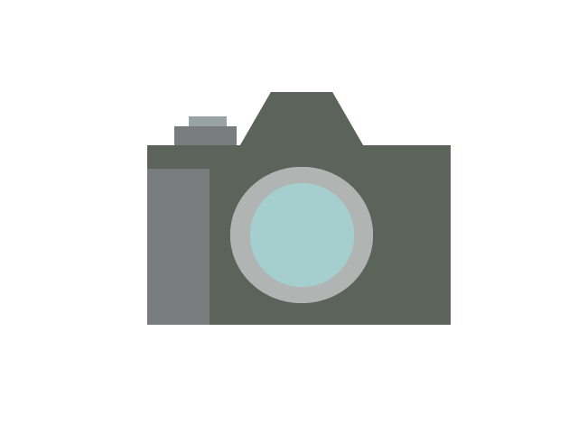

これまでの活動実績の紹介
これまで自分が行ったさまざまな仕事の実績を紹介します（2023年以降）。
何卒、採用活動の際の参考までによろしくお願いいたします。
ポスター・チラシ等制作
デザインソフト（Adobe PhotoShop・Affinity Publisherなど）を利用し、 主に地域団体などのポスター・チラシ製作を行った実績があります。
自分で撮影した各種の写真や自作のイラストを多用し、開催されるイベント等の内容が 端的にわかりやすいようにすることを制作時には心がけています。
ポスター・チラシ案件作成
過去の製作物より
過去に地域団体からの依頼で制作したポスター等を紹介いたします。
茨城言友会様向け ポスターデザイン・イラスト作成（2024年制作）
Webサイト制作・保守
関東ブロック規模で行われた、あるイベントにおける公式Webサイトを制作したこともあります。
保守性とレスポンシブデザインを両立するべく、Bootstrapを採用して
昨今ではメインとなっているモバイル環境からのアクセス利便性で好評を得ました。
それ以外にもBootstrapベースでの中小企業様向け新規LP構築や、
複数件のWordPress利用の既存Webサイトのプラグイン更新や内容修正等の作業も行った実績があります。
動画制作・編集
最近ではYoutube等を利用した動画によるPRが行われるようになりましたが、
地域イベントの動画制作依頼を受けて撮影から編集まで行った実績があります。
この時の動画は依頼者から「地域イベントにまた行きたくなる動画」と喜ばれました。
レンタルスペース 下邑屋住宅様 PR動画制作（2023年制作）
イラスト制作
依頼を受けて、児童向けの教材用や書籍などに使われるカットイラストを描くこともあります。
カットイラストは「文章で伝わりにくいイメージがわかりやすい」ということで、依頼者から度々好評を得ています。
イラスト系ポートフォリオはこちらもご参照ください。
（外部リンク）
 LINEスタンプ制作
LINEスタンプ制作
連絡などの気軽なコミュニケーションに欠かせない、LINEスタンプも制作しております。
LINEクリエイターズマーケット（外部リンク）